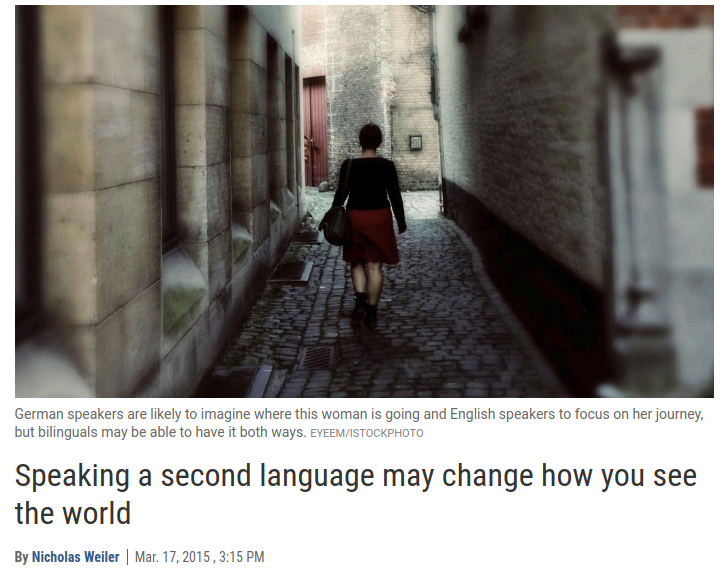
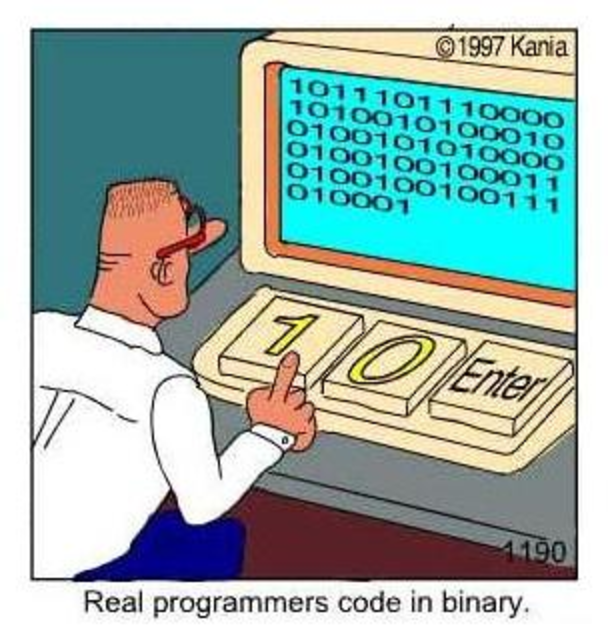
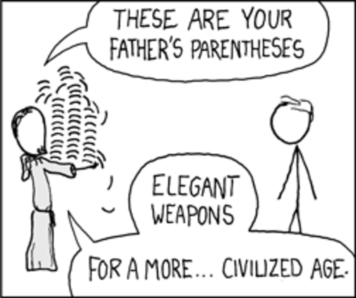

4 Languages You Must Learn
Miki Tebeka
But first, for something completely different …
- Django Girls: June 3
- Main Event: June 4, 5
- Workshops: June 6
Wohl Center (Bar Ilan University)
CFP is Open
(ends April 4)
We Still Have Some Sponsorship Slots Available
Back to the Show …
Why Other Language?

If all you have is a hammer

(photo by Marco Verch)

4 Types of Languages You Must Learn
1. Procedural/OO
Python, Go, C, C++, Java, Perl, PHP, Ruby, C#, rust, D, …
fact.py
fact.go
I’d Try C/Go
Books
2. Assembly
Know the machine!

fact.s
$ make fact
as -o fact.o fact.s
ld -o fact fact.o
$ ls -lh fact
-rwxrwxr-x 1 miki miki 864 Mar 2 18:23 fact
./fact
120 ↵
Books
3. Functional
fact.scm
fact.py

fact.py
fact.hs
fact.py
I’d Try Clojure/Haskell
Books

Also Everything by Norvig
Or maybe make your own Lisp
4. Logic
fact.pl
?- fact(10, X).
X = 3628800 .fact.py
Give Me Some Change
coins.pl
?- change(60, X).
X = [(half, 1), (dime, 1)] ;
X = [(half, 1), (nickel, 2)] ;
X = [(half, 1), (penny, 10)] ;
X = [(quarter, 2), (dime, 1)] ;
X = [(quarter, 2), (nickel, 2)] ;
X = [(quarter, 2), (penny, 10)] ;
X = [(dime, 6)] ;
X = [(nickel, 12)] ;
X = [(penny, 60)] ;
false.Try SWI Prolog
Prolog Experiments in Discrete Mathematics - PDF Book
How To Learn
Write code, read code.
Practice
Then scratch and itch with the language you learn
To Summarize
Learn 4 types of languages, it’ll expand your mind.
- Procedural/OO (C/Go)
- Assembly (x86)
- Functional (Clojure/Haskell)
- Logical (SWI Prolog)
Also, submit your PyCon talk
Please share …
Thank You